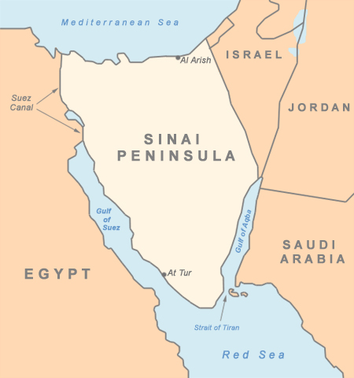
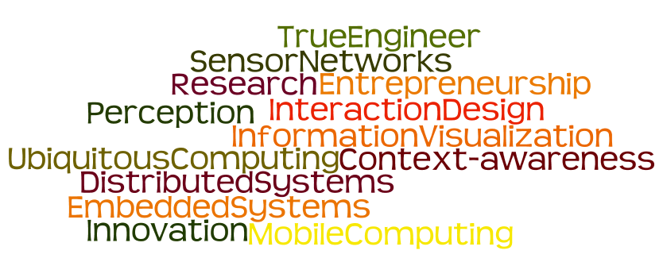

A. Selim Salman
- MSc Information Technology
- BSc Computer and Systems Engineering
- ITILv3 Service Strategy & Operations Management
- Cisco Certified Network Associate
Awards
- Inforamtion Technology Institute scholarship
- Boeing Business Enrichment Program
- HP Exceeds-Expectation Appraisal of 2012
Have dealt with:

- Companies I have worked with:
ITLogia, ITWorx, HP, DU, Vodafone
- Titles I have got through work:
Technical Consultant, Support Engineer, [Unix / Middleware]Systems Engineer, Svc Info Dev, DevOps Engineer
BSc Graduation Project

MSc: UCML, Ubiquitous Control Modeling Language for Android
- Support "Mobile Devices as primary computing devices for end-users"
- Proposed ODD, C3, UAT for better standardization and categorization
- Developed on Android 1.1


Proposed PhD Research Ideas
- A Mobile Computing approach towards enhanced Design Thinking procedures for a reliable Civic Engagement in Smart Cities and optimum Decision Making process
If I were given one hour to save the planet, I would spend 59 minutes defining the problem and one minute resolving it, Albert Einstein
A related reference: Design Thinking And Your Mobile Strategy, SAP Business Innovation
Proposed PhD Research Ideas
- Towards a unified standardized semantic work-flow / framework of Internet-based applications development in the mobility era
Variety of tools, technologies, and frameworks for developing, testing, deploying Internet applications in different areas of industries "Mobile, web, Embedded...etc.). Such diversity becomes a chaos without standardization or classification (A mix & match approach)
Proposed PhD Research Ideas
- Investigation of Quantified Self approaches for enhancing eHealth applications
A man can know what happens in the other side of the earth through Internet but do not know what is happening inside one's body. so How we can utilize current advances in technology for better health care.
One outcome: An Open Restful API, Mashup
Born in Sinai

Cosmopolitan by nature
Looking forward to add value through

Let us Design IT, Create Knowledge... As HPI tells